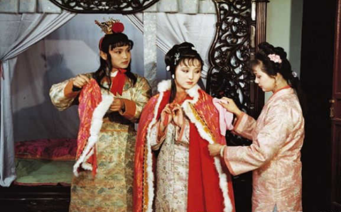
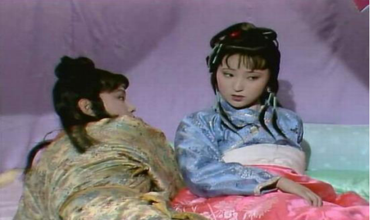

《红楼梦》中的混世霸王，天生的反叛者，离经叛道的贾宝玉
作为《红楼梦》的男一号，贾宝玉的身上承载着曹雪芹太多想要传达的思想，其中就有对封建社会的反叛。此书著于18世纪，而在14~17世纪，欧洲正在进行“文艺复兴”运动，欧洲先进的“民主”“反封建”思想或多或少会被世界上其他地区的人了解，明清时期的中国也不例外。
再加上曹雪芹在家族没落后，生活潦倒，不免会滋生对封建社会的不满，而他又不能直接在书中表现，贾宝玉就成了他一个很好的表达载体。从以下几个方面就可以看出来。
一、对封建等级制度的反叛
封建宗法制所规定的男尊女卑、贵嫡贱庶在中国古人的心中早已根深蒂固。人们都不约而同地将它作为指导思想来塑造自己，避免被他人称为异类。而宝玉偏偏就选择当这种异类，反其道而行之。对待女性，他尊重，热爱；对待庶出兄弟，他忍让，包容。
文中的平儿，家中无姊妹，孤身一人，又需照顾贾琏凤姐夫妇。面对贾琏之淫，凤姐之威，她都能妥帖周全，宝玉感其不易，于是“为之理妆”，并将此事视为平生意想不到之乐。
对于嫡与庶，他的态度非常的明确而决然，认为兄弟姊妹都一样，皆出于同一血脉，无亲疏之分。他从不拿出嫡长子的身份压榨他人，反而怕与他们生疏。甚至在贾环故意烫伤他时，也竭力为之掩饰、庇护。我们可以发现，贾宝玉反对人与人之间的等级之分，他内心向往的是人与人“平等共处”的生活方式，主张“公平”地对待任何一个人。他的这种行为与封建富家公子的行为形成了强烈反差。
二、对封建官僚制度的反叛
第三回中《西江月》说贾宝玉怕读文章。宝玉真的怕读文章吗？答案是否定的。第十七回《大观园试才题对额》，贾政命宝玉提联，宝玉轻松应答。连贾政也为之叹服，并在元妃省亲之时特地告诉元妃“园中所有亭台轩馆，皆系宝玉所题”。
可见宝玉并非不读书。他不读的只是为了应试而存在的“八股文”。八股取士是明清两代选取官僚的重要途径，更是控制知识分子思想的重要工具。宝玉不读八股，不做官，是对学而优则仕这一观点的直接反叛，他骂读书做官的人为国贼禄蠹。
在第三十六回中，宝玉批当时那些当官的为“须眉浊物”，只知道“文死谏”、“武死战”：武官有勇无谋，“自己无能，送了性命”；“文官又就只念两句书，记着心里，若朝廷少有瑕疵，他就胡谈乱谏，只顾邀忠烈之名，浊气一涌，即时拚死”。
贾宝玉这一言语，不知揭了多少封建纲纪的老底，抨击得多么畅快淋漓。当下也正是反腐打贪的高潮，揪出了一个个尸位素餐中饱私囊的高层领导，不就是宝玉口中“须眉浊物”么？当这样的官，岂不是浪费生命？

三、对封建礼教的反叛
在中国古代，“男女有别”被当作一种社会道德规范被人们遵守着。女子一般不可以随意离家，所以中国古代的女子一般都会显现出一种神秘感。对于女子的闺房，除了亲戚长辈，一般都不会让男子进入，即使是实有必要（比如大夫诊病），也不可停留过久。倘若一男子整天就往各个女子的闺房去，定会被戴上一个“淫人”的帽子。
而贾宝玉，则正是这种随意进出女子闺房的人。在第五回中，他在秦可卿的房里安睡，论辈分可还是秦可卿的叔父啊。即使宝玉当时年幼叔叔睡在侄儿媳妇的房里就更不合乎礼仪。古有“男女七岁不同席”，而曹雪芹笔下的贾宝玉却和一大群姑娘住在省亲别墅，不合时俗，不合礼教。以当时的道德观来评论贾宝玉的话，说他“天下第一淫人”也不为过。以此可以看出贾宝玉的“不走寻常路”，透露出的是他对“封建礼教的反叛”。

这自然会招致非议，比如第三回写黛玉的母亲曾如此评价宝玉：“顽劣异常，极恶读书，又最喜在内帷厮混；外祖母又极其溺爱，无人敢管。”贾宝玉“我行我素”，以自己所认为的方式去活，“走自己的路，让别人说去吧”，独自宣泄着对“封建礼教”的不满，不愿跟从它的步伐。
小编认为，贾宝玉被说成“行为怪癖性乖张”，他以一种其他人不能理解的方式表达着自己对这个社会的不满与愤怒，即使献出生命，也在所不惜。走在时代前面的人会被当时的人当做疯子，但最后，时间会证明他是对的。
他是天生的反叛者。衔玉而生的他注定一生不平凡，他内心火热却又孤独，他对反封建有一颗炽热的心，但是反叛之时缺少知己又备感孤独。贾宝玉是曹雪芹反封建意志的具象化，是那个时代先觉着的代表人物。